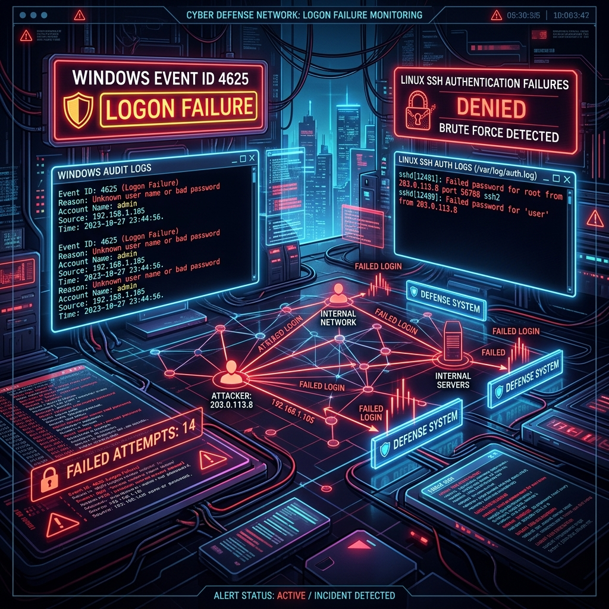

Demystifying Detection: Emulating Windows Event ID 4625 & SSH Login Failures

During our threat emulation research sprint in early June 2026, we focused on a critical telemetry gap that plague many security teams: reproducible login failure logging.
If your SOC rules trigger on "10 failed logins in 60 seconds," how do you actually verify that the alert fires? Do you open a command prompt and manually mistype your password ten times? Do you write a sloppy bash loop that might lock out a real service account?
To solve this, we engineered two highly focused, cross-platform threat emulation modules: EventID4625 (Windows Logon Failure) and LinuxLoginFailure (SSH Authentication Failure).
Here is the engineering breakdown of how we built these emulators to safely trigger and validate security events on Windows and Linux targets.
1. Emulating Windows Security Event ID 4625
On Windows systems, a failed logon attempt generates a Security Event ID 4625 (An account failed to log on) in the Windows Security Log. Security analyst teams rely heavily on this event to detect password spraying, credential stuffing, and brute force attacks.
To trigger this telemetry cleanly without executing full exploit tools like Mimikatz or Hydra, we built the EventID4625 module.
How it Works
The module simulates a failed network logon attempt by initiating an SMB connection to a target Windows machine using invalid credentials.
Instead of relying on a complex network library, we wrote a native Go client using the github.com/hirochachacha/go-smb2 library to negotiate the NTLM session. When the target Windows machine receives the invalid NTLM SSP handshake, the authentication fails, and the local Windows Local Security Authority (LSA) immediately logs Event ID 4625.
Go Implementation Details
// Setup connection config
conn, err := net.DialTimeout("tcp", fmt.Sprintf("%s:445", config.TargetIP), 3*time.Second)
if err != nil {
log.Fatalf("[-] Failed to establish TCP connection: %v", err)
}
defer conn.Close()
// Initiate SMB2 negotiation to trigger Event ID 4625
d := &smb2.Dialer{
Initiator: &smb2.NTLMInitiator{
User: config.Username,
Password: config.InvalidPassword,
Domain: config.Domain,
},
}
_, err = d.Dial(conn)
if err != nil {
// The dial will fail due to invalid credentials, which is our expected result
fmt.Printf("[+] SMB Handshake sent to %s. Telemetry generated.\n", config.TargetIP)
}
By keeping the script native to SMB ports (TCP 445), we ensure that standard active directory controllers and workgroup hosts log a high-fidelity Event ID 4625 containing the targeted username, source IP, and logon type (typically Logon Type 3 - Network Logon).
2. Emulating Linux SSH Login Failures
On Linux platforms, failed SSH authentication attempts are written to syslog—typically /var/log/secure on Red Hat-based systems or /var/log/auth.log on Debian/Ubuntu systems.
To automate the validation of SSH monitoring rules, we designed the LinuxLoginFailure module.
The "Public Key" Challenge
While password-based brute force is simple to script, hardened production environments often disable passwords entirely (PasswordAuthentication no), enforcing SSH Key-Based authentication. Under standard SSH setups, trying to trigger a password failure on a key-only SSH daemon returns a different log signature than a signature verification failure.
To address this, our Go implementation programmatic triggers both modes:
- Password Authentication: Attempts a standard password authentication sequence.
- Key-Based Authentication: Generates an invalid signature exchange by loading a dummy RSA private key. The target SSH daemon receives the packet, attempts to verify the signature against its authorized keys, fails the cryptographical handshake, and logs a public-key pre-auth disconnect event.
Go Implementation (Public Key Support)
// Parse mock private key data to trigger signature validation failure
signer, err := ssh.ParsePrivateKey([]byte(config.InvalidKeyData))
if err == nil {
authMethods = append(authMethods, ssh.PublicKeys(signer))
} else {
// Fallback to password authentication
authMethods = append(authMethods, ssh.Password(password))
}
3. Modular Portability
To ensure these modules can run in any environment—from modern containers to restricted enterprise hosts—we structured each module with four equivalent implementations:
- Go: Cross-compiled into native, standalone binaries for Linux and Windows (
.exe) with no runtime dependencies. - Python: Uses standard
paramikoand socket libraries. - Bash: A lightweight script leveraging
sshpassor netcat for quick CLI checks. - PowerShell: Employs
New-ObjectTCP socket connections and raw NTLM bindings.
By creating consistent configurations across all four languages, we ensure that operators can deploy these emulators regardless of local endpoint restrictions.
In our next writeup, we will discuss the critical importance of actively testing these event sources and how static alert rules can leave you blind to customized intrusion paths.